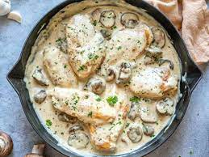

Chicken Artichoke with Mushrooms

This is a Chicken Artichoke With Mushrooms.
This artichoke recipe takes a little work, but it is so satisfying and filling that it's worth it!
Recipe:
- salt and pepper to taste
- 1 tablespoon olive oil
- 1 (14 ounce) can marinated quartered artichoke hearts, drained, liquid reserved
Steps:
- Season chicken with salt and pepper. Heat oil and butter in a large skillet over medium heat. Brown chicken in oil and butter for 5 to 7 minutes per side; remove from skillet, and set aside.
- Place artichoke hearts and mushrooms in the skillet, and saute until mushrooms are brown and tender. Return chicken to skillet, and pour in reserved artichoke liquid and wine. Reduce heat to low, and simmer for about 10 to 15 minutes, until chicken is no longer pink and juices run clear.